Call to action! It's time!
Sign up for our product, for more adventurous saga of Anime World!
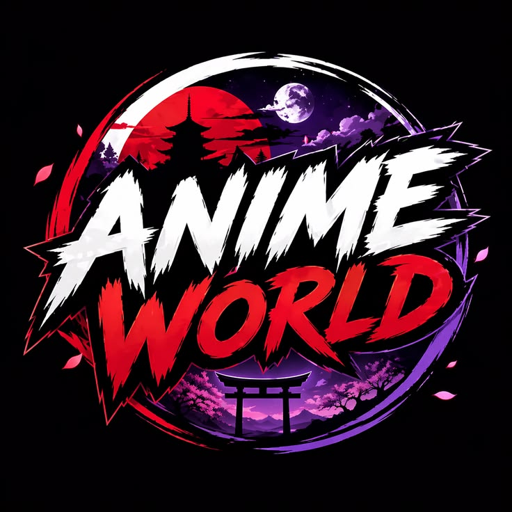
An Adventurous Saga of Anime Characters in Anime World. So guys are you ready to explore. So fasten your seat belts.
ICHIGO KUROSAKI
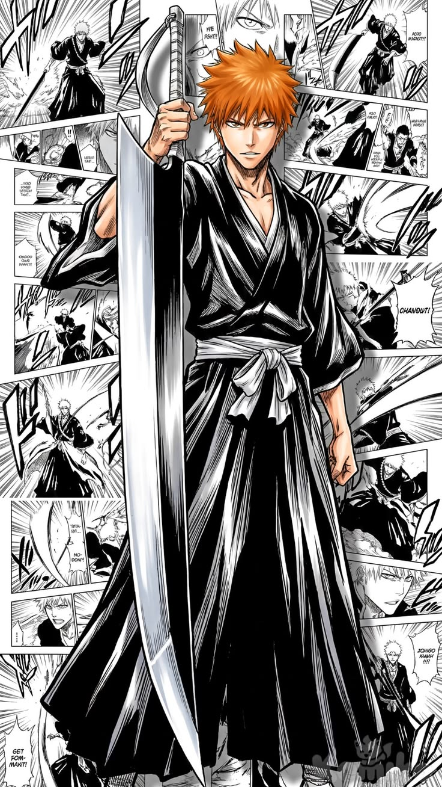
{THE SUBSTITUTE SOUL REAPER, THE SAVIOR OF THE THREE WORLDS, THE UNRIVALLED ONE}
"The difference in ability, what about it? Do you think I should give up just because you're stronger than me? I'm not fighting because I want to win. I'm fighting because I have to win."
ITACHI UCHIHA
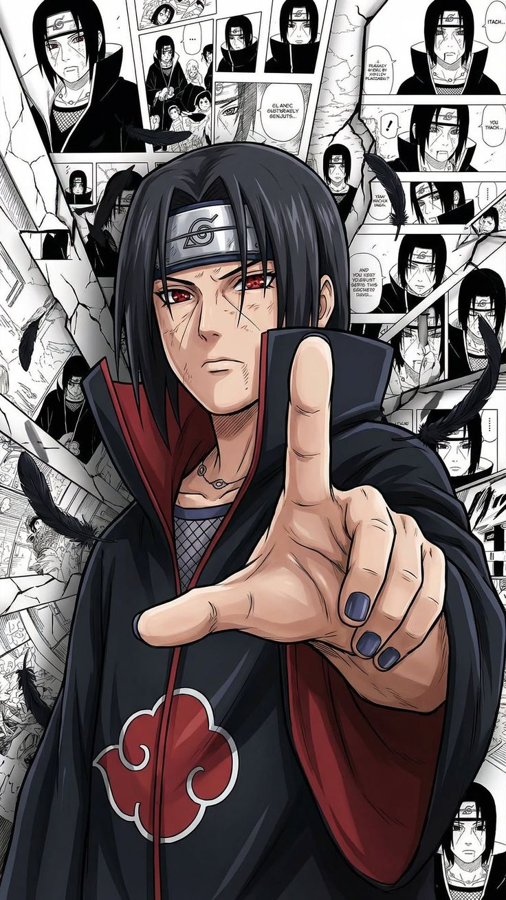
{ITACHI OF THE SHARINGAN, GENIUS OF GENIUSES, GOD OF GENJUTSU}
“Time doesn’t heal anything, it just teaches us how to live with pain. Each of us lives, dependent and bound by our individual knowledge, and our awareness. All that, is what we call "reality". However, both knowledge and awareness are equivocal. One's reality might be another's illusion. We all live inside our own fantasies.”
KYOJURO RENGOKU
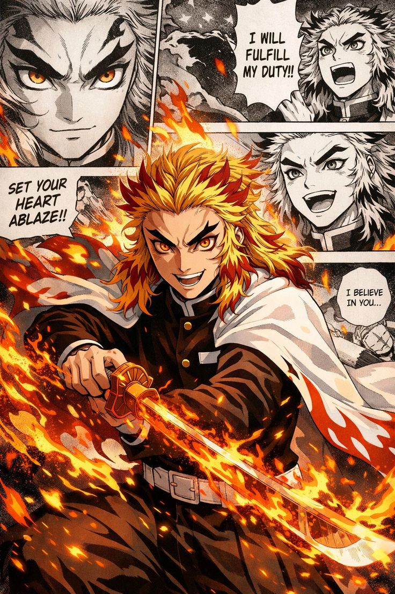
{FLAME HASHIRA}
"No matter how weak or unworthy you feel, keep your heart burning, grit your teeth and move forward! If you just curl up into a ball and cry, time will pass you by. It won't stop for you while you wallow in grief. Set your heart ablaze!"
MONKEY D. LUFFY
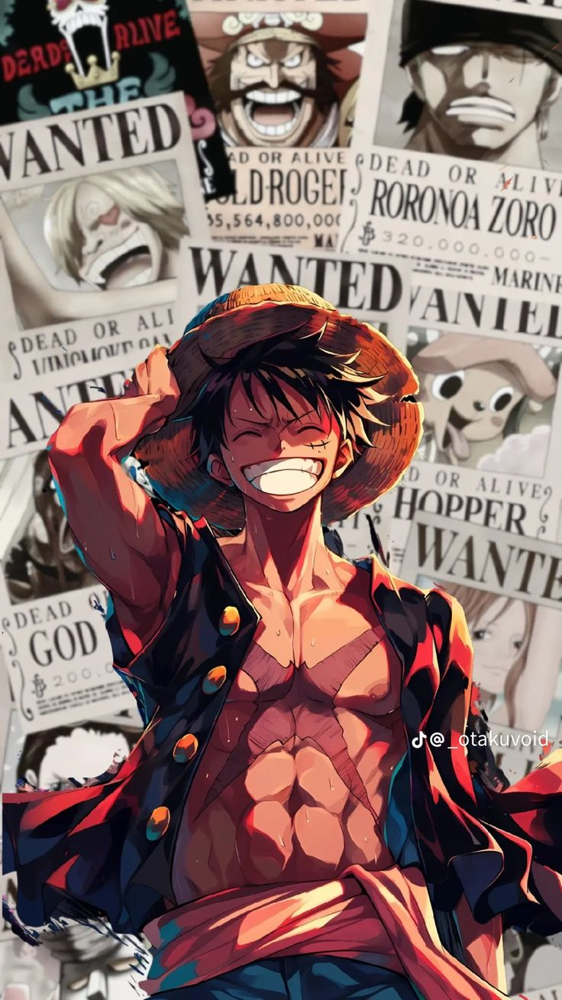
{STRAW HAT, FUTURE KING OF THE PIRATES}
“If you don’t take risks, you can’t create a future. It's not about whether I can or not. I'm gonna do it because I want to. I'm gonna be King of the Pirates!"
NARUTO UZUMAKI
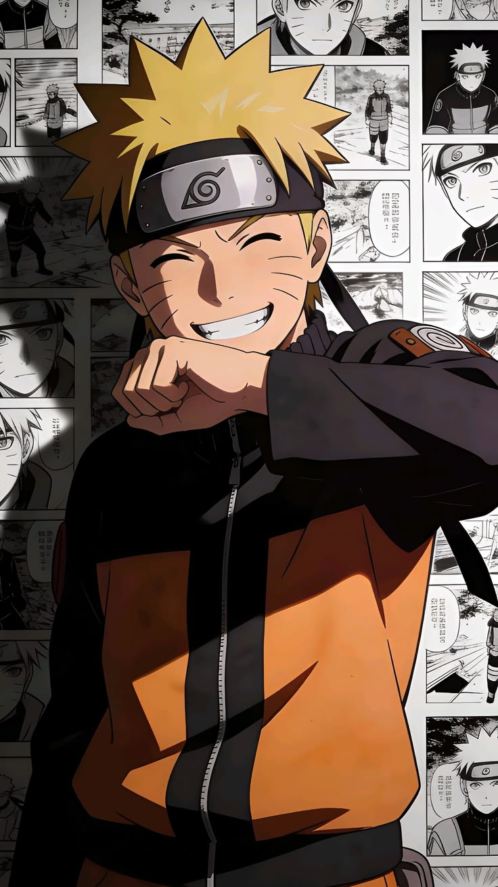
{NO. 1 UNPREDICTABLE NINJA, CHILD OF PROPHECY, HERO OF HIDDEN LEAF VILLAGE, SAGE OF NINE-TAILS}
"If you don't like your destiny, don't accept it. Instead, have the courage to change it the way you want it to be! I'm not gonna run away, I never go back on my word! That's my nindo: my ninja way! I'm going to be Hokage!"
RORONOA ZORO
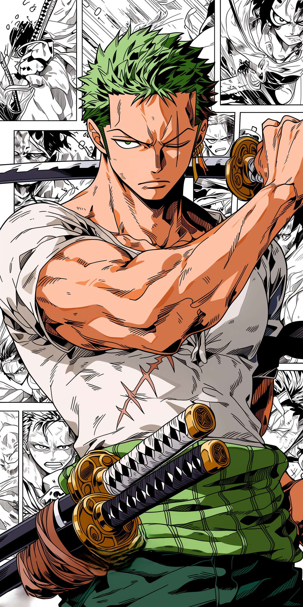
{PIRATE HUNTER, KING OF HELL}
"If I can't even protect my captain's dream, then whatever ambition I have is nothing but talk... A scar on the back is a shame for a swordsman. I'm gonna get stronger for her, too! I'm going to get strong enough that my name reaches to Heaven! I'm going to be the world's strongest swordsman! I shall become... the King of Hell!"
RYOMEN SUKUNA
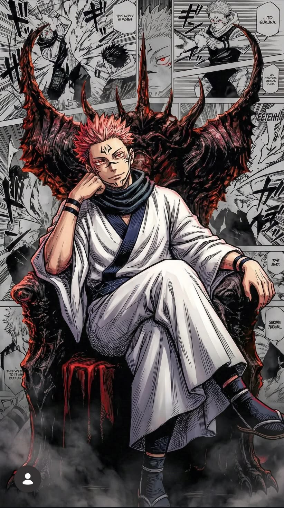
{KING OF CURSES, THE STRONGEST SORCERER IN HISTORY}
"You should have burnt everything you desired to a cinder. To reach the height of Satoru Gojo and not worry about your future or identity. But you lacked the hunger to take hold of your desires. What a waste of talent..."
SAITAMA
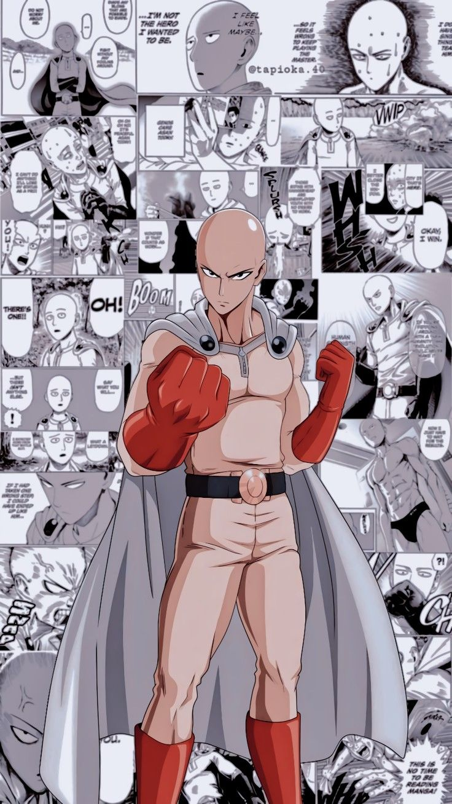
{ONE-PUNCH MAN, THE STRONGEST HERO}
"Is that really... the limit to your power? Do you honestly think that you won't get any stronger for the rest of your life? If you really want to become strong, stop caring about what others think about you. Living your life has nothing to do with what others think."
SATORU GOJO
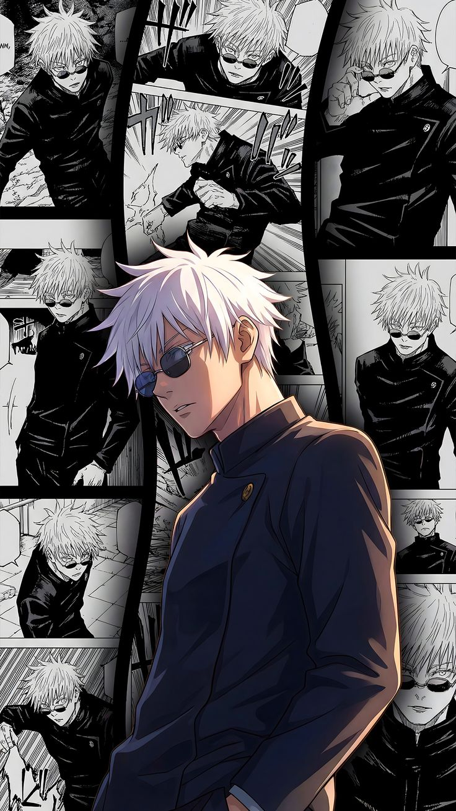
{THE HONORED ONE, THE STRONGEST MODERN SORCERER}
“I’m gonna reset this crappy Jujutsu world. It’d be easy to kill everyone who’s in charge. But someone else would just take their place. Nothing would change. And it’s not as if people approve of massacres anyway… So that’s why I’m turning to education. I need strong and intelligent allies. I need to foster them.”
SON GOKU
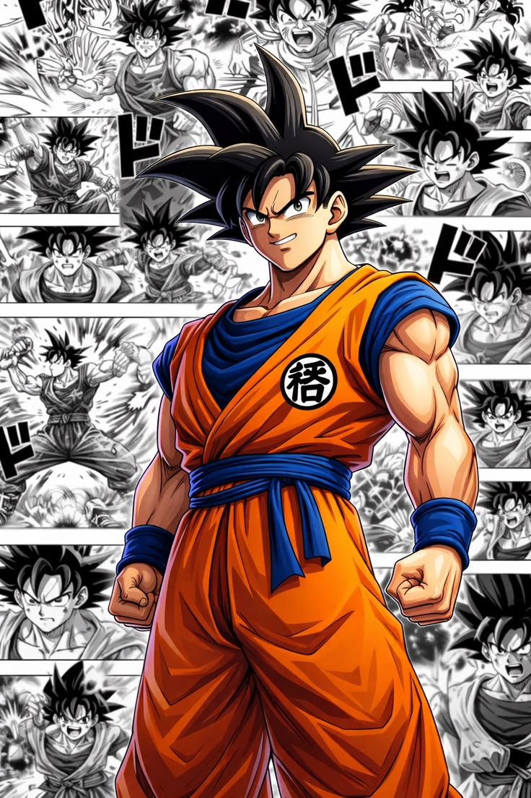
{SUPER SAIYAN, HOPE OF THE UNIVERSE}
“I’m the Saiyan who came all the way from Earth for the sole purpose of beating you. I am the warrior you’ve heard of in the legends, pure of heart and awakened by fury – that’s what I am. I AM THE SUPER SAIYAN! SON GOKU!”
SUNG JINWOO
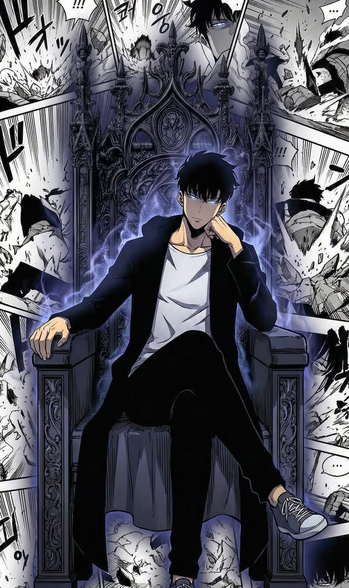
{SHADOW MONARCH, THE STRONGEST HUNTER}
"If you have overwhelming strength, you go into every situation with an advantage. When you’re powerless, there’s nothing you can do around the strong besides quiver in fear and stand around helplessly. You get looked down on when you’re weak. You can be knowledgeable, you can be creative, you can be considerate, but when faced with the strong, none of it will save you!"
TANJIRO KAMADO
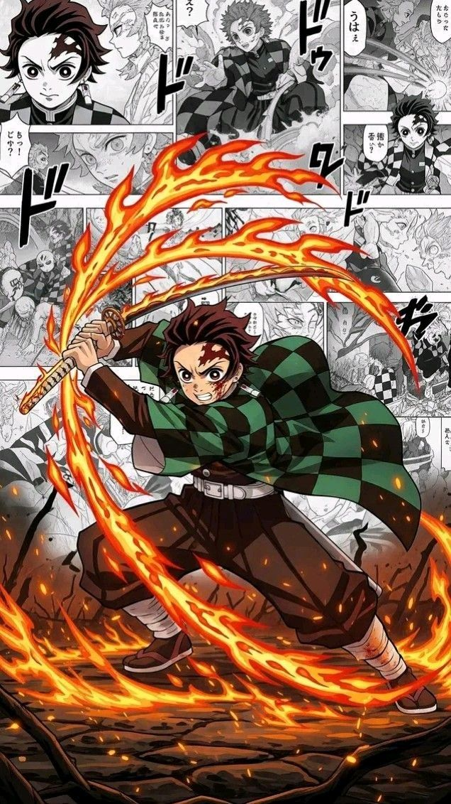
{CHILD OF BRIGHTNESS}
"The strong should aid and protect the weak. Then, the weak will becom strong and they, in turn, will aid and protect those weaker than them. That is the law of nature."
"Never ever give up, no matter what's against you. Stand against world if you have to, believe in yourself, believe in GOD. Trust in your process, trust in GOD, GOD plan is always best."
Call to action! It's time!
Sign up for our product, for more adventurous saga of Anime World!